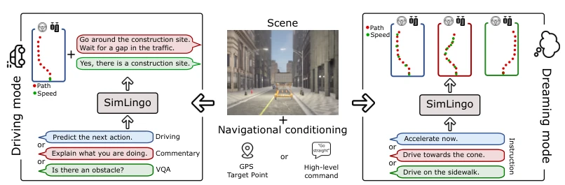
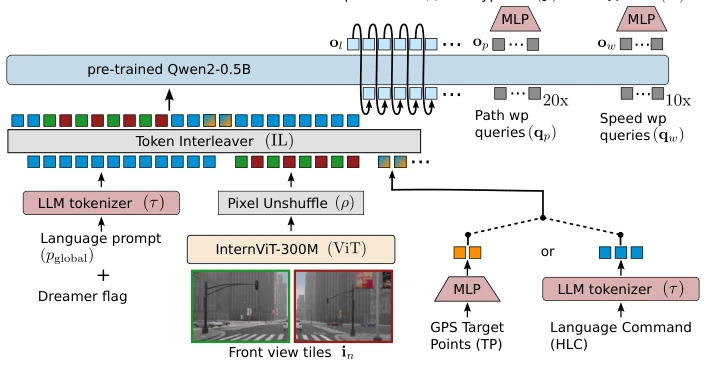
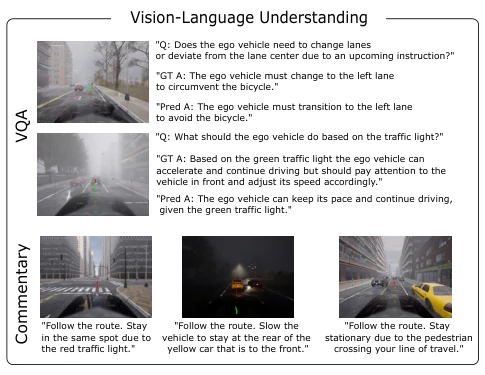
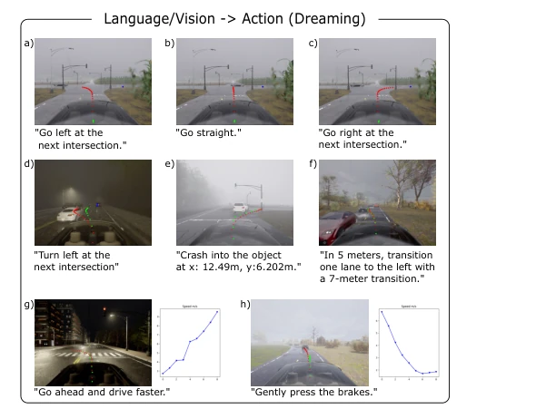
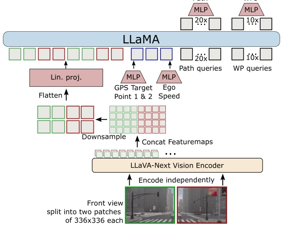
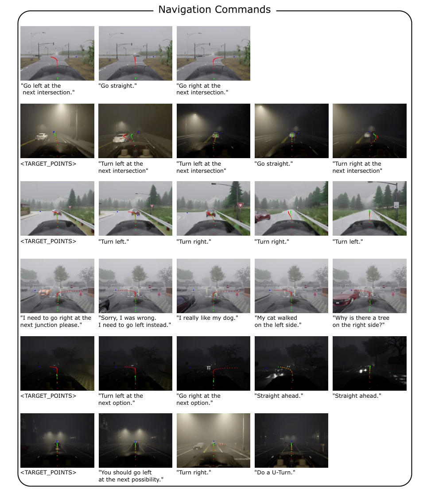
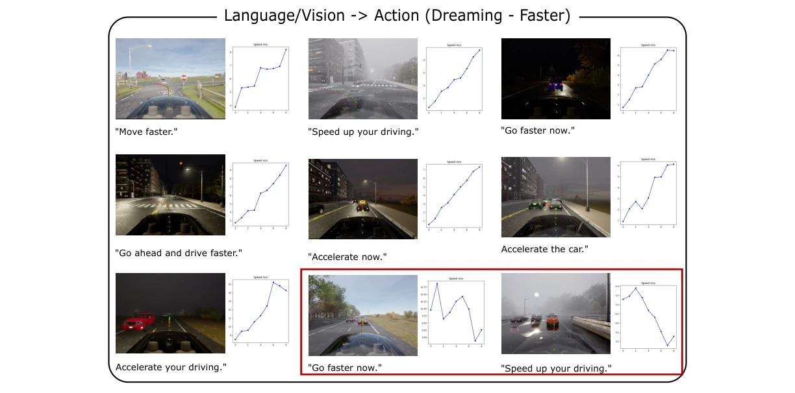
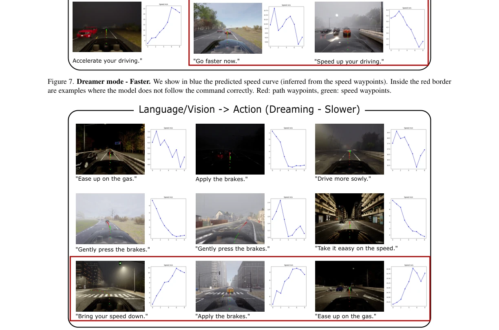
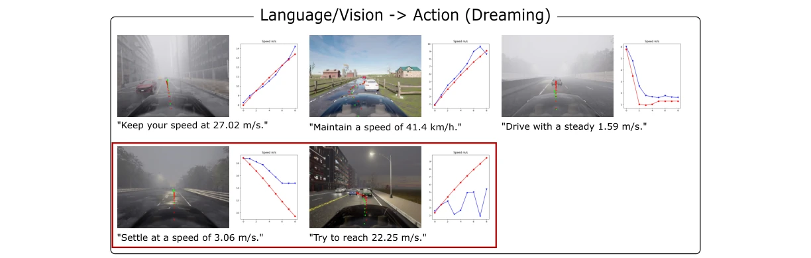
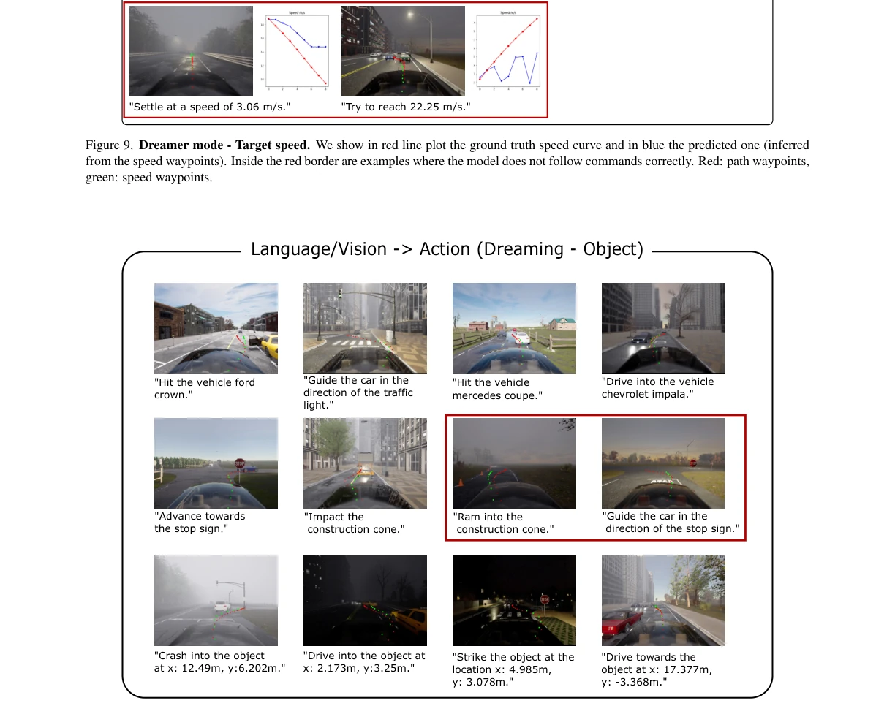

SimLingo achieved SOTA on CARLA Leaderboard 2.0 using only cameras, which is indeed a tough nut to crack in purely visual closed-loop driving, worthy of praise. Its proposed "language-action alignment" is realized through the Action Dreaming task, essentially "rehearsing" instruction consequences in simulation, which is both safe and efficient. However, the paper also admits that the full version model could not be tested in practice due to the leaderboard closure, so only the BASE version was used to fill the gap, and the driving improvement from Chain-of-Thought is not statistically significant, somewhat "much ado about nothing". Most ironically, it claims to be a general-purpose model, but all experiments were run in CARLA simulation, with no mention of latency and generalization issues on real vehicles; this "deployment" promise is a bit hollow, after all, the gap between simulation and reality cannot be bridged just by LoRA.
Existing VLM autonomous driving research often falls into the awkward situation of "understanding the car but not driving". Many works rely on open-loop evaluation [25, 53], or test in simplified environments like HighwayEnv [14, 15, 41, 61], where results cannot be transferred to closed-loop. More seriously, VQA capabilities are decoupled from driving behavior; the model might say "stop at red light" verbally but accelerate, this language understanding lacks causal evidence. Additionally, mainstream methods mostly rely on expensive sensors like LiDAR [8, 13, 26, 49, 50], lacking the generality of purely visual systems. We need a model that can truly understand instructions and convert them into safe actions, and must be verified in complex closed-loop scenarios, otherwise it is just talk without action, unable to cope with real-world long-tail scenarios.

Figure 1. Overview: SimLingo is a vision-language-action model unifying the tasks of autonomous driving, vision-language understand- ing and language-action alignment. It is state of the art on the official CARLA Leaderboard 2.0 and Bench2Drive using only camera images. We introduce the task of Action Dreaming, a form of instruction following, to improve the alignment of language and action.
SimLingo is based on the InternVL2-1B architecture, adopting LoRA fine-tuning. At the input end, high-resolution images are chunked and encoded, combined with GPS target points or language instructions, and sent to the LLM via Token Interleaver. The core innovation is the Action Dreaming dataset construction: utilizing the "world on track" assumption [9] to simulate multiple future trajectories, generating instruction-action pairs, forcing the model to focus on language rather than just vision. The output adopts decoupled representation, predicting temporal speed points and geometric path points simultaneously, paired with a PID controller, which is more stable than single temporal points. During training, expert trajectories and dream trajectories are mixed, using Smooth-L1 loss to optimize actions and cross-entropy to optimize language; during inference, the Commentary task is enabled by default, forming a Chain-of-Thought process, explaining first then acting, enhancing interpretability.

Figure 2. SimLingo architecture. We encode the image, navigational conditioning and the language prompt. To encode high-resolution images, we split them into tiles, and encode each independently to reuse the pre-trained image encoder pre-trained on 448x448 resolution. All embeddings get processed by an LLM which we finetune with LoRA to predict language and actions. The action output utilizes a disentangled representation with both temporal speed waypoints and geometric path waypoints for improved lateral control.
Tested on CARLA LB2.0 and Bench2Drive benchmarks. SimLingo-BASE achieved a Driving Score of 6.25 on LB2.0 Sensor Track, far exceeding TF++ [68]. On Bench2Drive, SimLingo scored 85.07, significantly better than TCP-traj [62]. GPT scores on VQA and Commentary tasks also lead the InternVL2 baseline. Ablation studies show that decoupled output improves driving scores by 39.9%, and Action Dreaming data can slightly improve closed-loop performance. However, pure language tasks have no significant impact on driving, and the Comfortness metric is slightly low, possibly due to higher speeds. Additionally, the model performs poorly on rare answer types, indicating that data distribution still needs optimization.

Figure 3. Qualitative results for VQA and Commentary. For VQA we show the question, the ground truth answer and the pre- dicted answer for two examples scenes. Both questions refer to objects far away only apparent in a couple of pixels, but the model still produces correct answers.

Figure 4. Qualitative results of Pose Dreaming. We show the predicted actions for a diverse set of situations and instructions. The model can successfully adapt to path and speed related in- structions. Legend: red: path waypoints, green: speed waypoints, blue graph: speed in m/s.
其他图片Other Figures

Figure 5. SimLingo-BASE architecture. The images are split in two, and each split is independently encoded and then concatenated, downsampled, and projected before feeding it into a transformer decoder which is based on the LLaMA architecture. The output utilizes the same output representation as SimLingo.

Figure 6. Navigational Commands. We show closed-loop results for different in-distribution and out-of-distribution commands. Red: path waypoints, green: speed waypoints.

Figure 7. Dreamer mode - Faster. We show in blue the predicted speed curve (inferred from the speed waypoints). Inside the red border are examples where the model does not follow the command correctly. Red: path waypoints, green: speed waypoints.

Figure 8. Dreamer mode - Slower. We show in blue the predicted speed curve (inferred from the speed waypoints). Inside the red border are examples where the model does not follow commands correctly. Red: path waypoints, green: speed waypoints.

Figure 9. Dreamer mode - Target speed. We show in red line plot the ground truth speed curve and in blue the predicted one (inferred from the speed waypoints). Inside the red border are examples where the model does not follow commands correctly. Red: path waypoints, green: speed waypoints.

Figure 10. Dreamer mode - Object (Collision). Inside the red border are examples where the model does not follow dreamer mode command correctly. Red: path waypoints, green: speed waypoints.